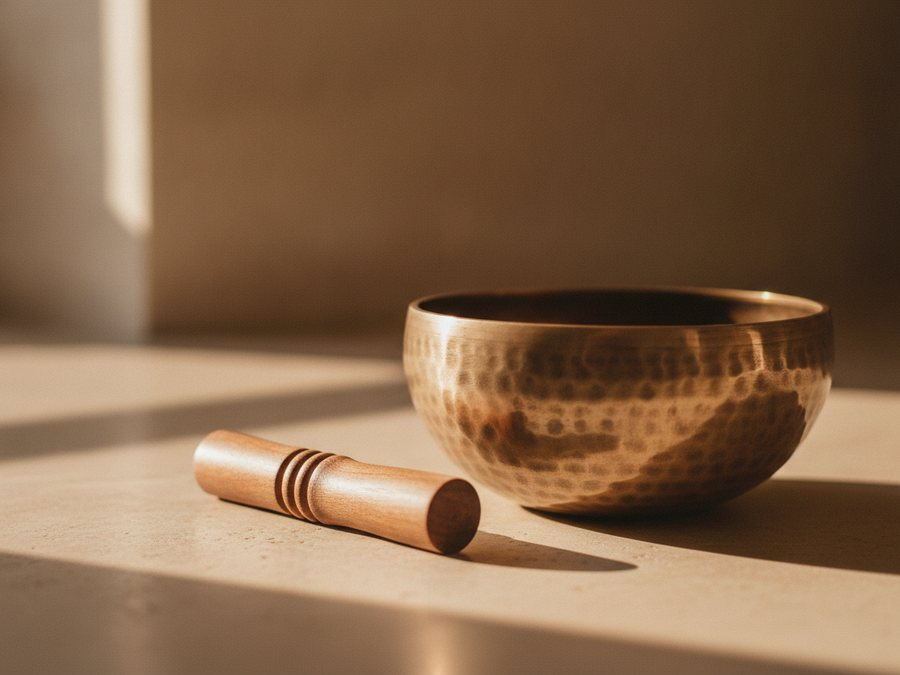

Somatic Coaching
It begins with a clear intention
While psychotherapy explores past experience and emotional healing in depth, coaching begins somewhere else. Together we clarify what matters most to you, identify your goals, and agree how a defined timeline is appropriate for receiving support.
Whether you are developing your leadership of self and others, enriching career and prospects, seeking greater wellbeing, or exploring questions of identity and purpose, somatic coaching offers a practical and reflective pathway forward.
Ask about the programme
In silence, only, this communion, this union, this participation can take place.
Roberto Assagioli, SilencioAsking what your body is telling you
My psychological coaching is informed by Somatic Experiencing® and an understanding that the body is central to how we think, feel and respond to the world.
Present-moment bodily experience
By paying close attention to it, we begin to recognise patterns of tension, resilience and possibility that may previously have gone unnoticed. The body-mind and heart-mind become guides to our work.
As the nervous system settles
Clearer thinking, greater emotional balance and more conscious choice become possible. Rather than asking what you should do, we also ask what your body is telling you.
An outline of how we would work
Designed to provide both continuity and space for reflection. It is not necessary to have any experience of yoga to benefit from this approach.
Eight coaching sessions
In person, 120 minutes each, approximately four weeks apart.
Eight reflective support sessions
60 minutes each, by telephone or video call, between the coaching sessions.
The time in between
That gap allows for experiential application of learning, so new awareness has room to integrate, and gives us proactive reflection to explore together.
Programme fees
Please enquire via the contact page.
What we may draw on
This is my body, so, I am found.
Alongside the coaching conversation, I may draw upon gentle movement, breath awareness, mindful reflection and contemplative practices that support integration of body, mind and heart.
Yoga postures engage thinking, feeling and reflection. Sensory perception is expanded as neural pathways are re-ignited. Physical movement with focus quietens the mind and creates space for new perspectives. This is energising and grounding.
Techniques for contemplative reflection are regulated breath and meditative pause, such as Metta Bhavana and Mindfulness of Breathing from the Buddhist tradition. For me, sensing our breathing body is an expression of embodied spirituality, returning moment by moment to the place where body, mind and heart meet.
With these techniques, becoming centred emerges. A deep inner cohesion enhances the learning opportunities, and the capacity for mindful awareness develops. Drawing on the tradition of yoga as a mindfulness-based method within an integrated coaching approach is based on studies in which I engage on neuroscience research and well-being. There are evidence-based effects on emotional balance, mental concentration and enhanced self-esteem.
What this work has made possible
This is an inspiring way to be resourceful in the face of continual change and competing demands that stretch your capacity in all directions. I took the opportunity to connect with what was really true for me and then took that insight into my life, both personal and organizational, with the result of enriching both myself and the individuals that I connect with.